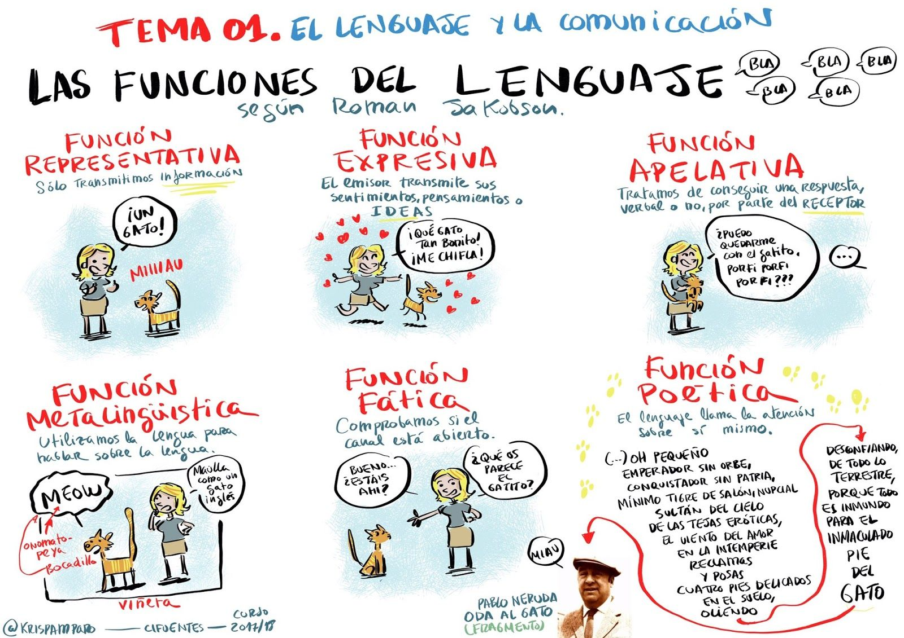

EJEMPLOS
- Denotativa o referencial.
Se produce cuando el emisor utiliza el lenguaje para transmitir, contar o explicar una información al receptor.
Son las tres y media.
- Emotiva o expresiva.
Se da cuando expresamos sentimientos, pensamientos o deseos. Está centrada en el emisor.
¡Qué pena, casi gana el Real Madrid!
- Conativa o apelativa.
El hablante quiere llamar la atención al oyente para venderle algo, darle una orden o pedirle un favor. Esta se centra en el receptor y se utiliza con el objetivo de condicionar o alterar su conducta.
¡Oye, oye, espera un momento!
- Fática o de contacto.
Se utiliza para establecer contacto, continuarlo o cortar la comunicación. Tiene como función mantener el contacto físico o psíquico entre los hablantes.
Hola, ¿qué tal? ¡Adiós, hasta pronto!
- Poética o estética.
Se utiliza cuando se busca la belleza y el mensaje oral o escrito se cuida especialmente.
Amar es cuando la proteges de la lluvia y el viento.
Amar es cuando la abrazas y te olvidas del tiempo.
- Metalingüística.
Cuando utilizas la lengua para hablar del propio lenguaje.
Pero, es una conjunción adversativa.